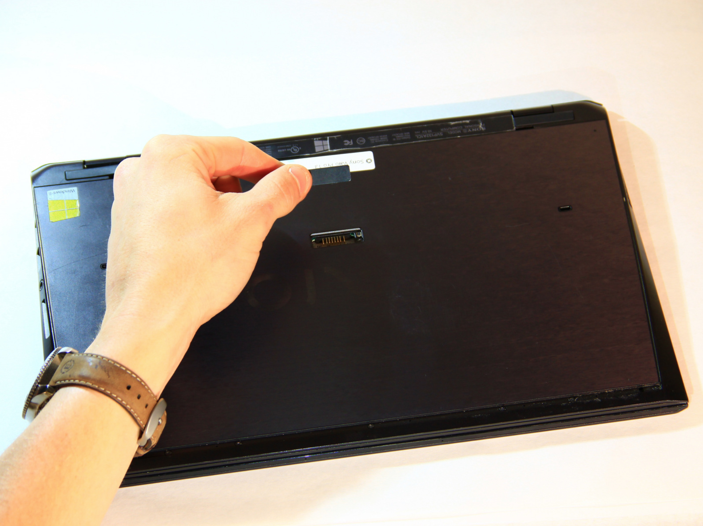
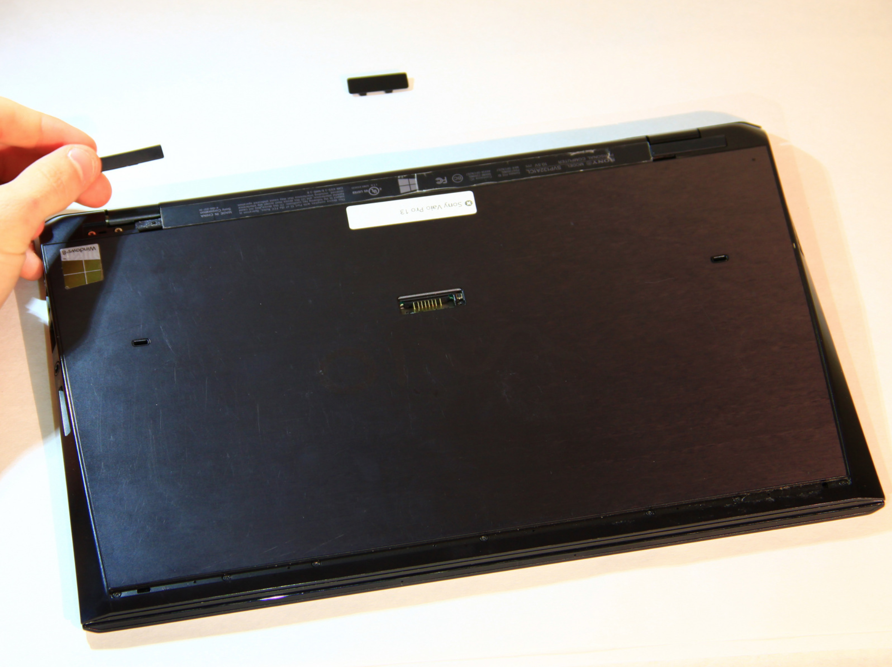

 Remove cover for the extended battery connector. Use your finger nail or a plastic opening tool to remove it.
 Remove the two rubber feet at the back of the computer, these can be removed in the same way.